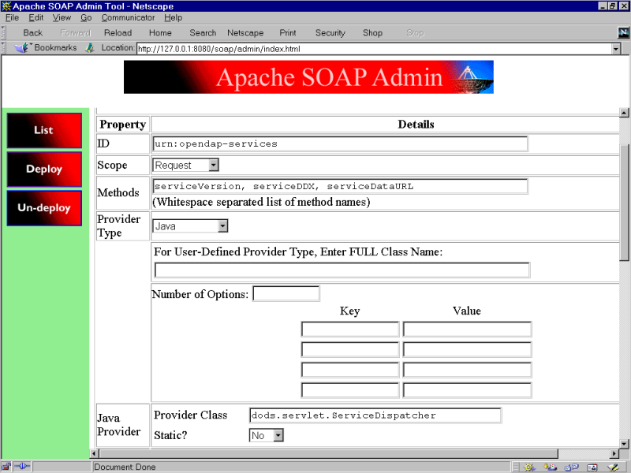

Introduction
The web approach to building distributed applications has been more rapidly and widely adopted than any other approach. A logical extension of this success is the development of web services technologies which are more loosely coupled than traditional distributed programming models like RPC, DCOM and CORBA. Web services create interactions between clients and servers which are simple and flexible. At the same time the technology includes the structural capability to do object transfers that are not possible under plain HTTP. Web services do these transfers by using SOAP messages (as opposed to the MIME messages typical of ordinary web applications). This is a more data-friendly mechanism for exchanging information over the web and is ideal for the purpose of creating a convenient interface to OPeNDAP servers.
The rationale for creating OPeNDAP web services is that it would allow programmatic clients to access OPeNDAP servers in a more reliable and structured way than the HTTP interface. Web services also make client implementations easier because the client developer need only work with objects rather than worry about constructing and parsing text messages. Traditionally all of the control structures in OPeNDAP have been passed as text which both client and server must construct/parse. We have provided tools such as the dods.dap package which allow the client to parse some of these messages, but this is a non-standard and incomplete solution. With web services OPeNDAP has a standard mechanism for reliable
interfacing and object transfer without parsing.
An important benefit of a web services interface is that it provides the basis for directory services via UDDI. Using this technology server sites may have the option of publishing information about their content globally or locally. This would expand the ability of end users to locate data sources.
Another auxiliary capability of the web services implementation will be to provide for the possibility of hosting secure sites--something not possible with current incarnations of OPeNDAP. For those users with sensitive or restricted data this would allow them to publish that data over the web, but still enforce a comprehensive security policy. SOAP supports an integrated ability to exchange digital signatures and X.509 credentials in a standard way.
Component Areas
Implementing web services involves building and configuring several different types of components. Depending on the type of service desired and the nature of the underlying application these components can vary. For enabling OPeNDAP servers with web services we have focused on the following component areas:
(1) server configuration and dispatching
(2) services
(3) WSDL publication
(4) server-side code enhancement
(5) client support
(6) new object design
(7) directory support
The next section of this document details the additions to an OPeNDAP server that enables web services by treating each of these areas separately.
Component (1) - Server Configuration and Dispatching
Because OPeNDAP Java servers are implemented with Apache and Tomcat we take advantage of Apache's integrated SOAP support to dispatch web service requests. The current configuration of the OPeNDAP Java server already contains most of the elements necessary to add this support. The additional steps are:
Deploy Apache SOAP to Tomcat: put the Apache SOAP archive file (soap.war) into the %tomcat_home%/webapps directory. Add the libraries mail.jar, activation.jar, xerces.jar to the Tomcat library directory(%tomcat_home%/common/lib/).
Deploy the service class: the service class
OPeNDAP.services.ServiceDispatcher.class where the SOAP router
can find it (%tomcat_home%/webapps/soap/WEB-INF/classes/opendap-services/).
Deploy the service: this can be done by a script executing the following command: java org.apache.soap.server.ServiceManagerClient http://localhost:8080/soap/servlet/rpcrouter deploy DeploymentDescriptor_OPeNDAP_Services.xml. The deployment descriptor file in this command is listed in Appendix A.
Part of the configuration is a class, dods.servlet.ServiceInitializer, which serves as a dumb container for any configuration parameters needed by the dispatcher. To load this class add an entry to the Apache SOAP servlet configuration file (%tomcat_home%/webapps/soap/WEB-INF/web.xml):
<:servlet>
<servlet-name>serviceinitializer</servlet-name>
<display-name>OPeNDAP Services Initializer</display-name>
<description>Stores parameters used by the service dispatcher.</description>
<servlet-class>dods.servlet.ServiceInitializer</servlet-class>
<init-param>
<param-name>DDScache</param-name>
<param-value>/Java-DODS/sdds-testsuite/dds/</param-value>
</init-param>
<load-on-startup> 1 </load-on-startup>
</servlet>
The "DDSCache" parameter should match the one used in the DODS servlet configuration file. For a windows machine the slashes will be reversed and a drive letter will be referenced.
Once these steps have been completed the new services (described in section 2 below) will be reachable. In general the approach taken on the server side is to use a hard-coded deployment descriptor to instruct Apache how to route incoming messages. This may not be as flexible as using dynamic invocation with JAX-RPC, for example, but is exactly appropriate for OPeNDAP servers which are expected to implement only a few services which will rarely change.
Component (2) - Services
The key feature of the web services design is the envisioned services themselves. These are all new interfaces that replace existing internal interfaces of the servlet code base with a web services version of the same function. The OPeNDAP Java server operates via the servlet dods.servlet.DODSServlet. The doGet method of the servlet dispatches the client request to one of eleven internal methods:
Existing Internals doGetVER doGetHELP doGetDDS doGetDAS doGetDODS doGetDIR doGetASC doGetINFO doGetHTML doGetCatalog doGetStatus New Web Service Interface (in OPeNDAP.services.ServiceDispatcher) serviceVersion - returns the server version as String serviceDDX - returns the DDX XML document as a String serviceDataURL - returns the URL to requested data as a String
The existing servlet dispatcher uses a final extension on the URL to route the request. For example, if the client wants the ASCII text of the data it appends ".ASC" to the end of the URL file. The web service interface is invoked directly by the Apache SOAP routing service(org.apache.soap.server.ServiceManagerClient). The four service methods are in a new class OPeNDAP.services.ServiceDispatcher which is registered via the Apache SOAP API. The Apache router determines the destination service by examing the body entry in the SOAP envelope from the client and then calls that method.
The methods that implement the services can be any normal Java method because the simplest method of invocation (plain RPC) is used. The only restriction is that the method parameters must be serializable. To comply with this restriction and make the parameters of the service methods more client-friendly, they differ somewhat from the parameter strategy found in the existing methods which use a special "requestState" object which bundles the individual parameters:
String serviceVersion() throws SOAPException
String serviceDDX( String sDodsURL ) throws SOAPException
String serviceDataURL( String sDodsURL, String sConstraint ) throws SOAPException
The service methods cannot merely redirect the request to the existing internals because the service methods return SOAP envelopes, thus the service methods must re-implement the existing code for the new output format.
Component (3) - Server-Side Code Enhancement
To support web services the OPeNDAP server-side code requires certain enhancements beyond adding the service interfaces. One type of new code is required for retrieving and returning the DataDDS. In the existing servlet this is done via a special routine in the dods.dap.Server.CEEvaluator class which generates the octet stream. Instead the service helper needs to just create the dods.dap.DataDDS object itself and return it in its entirety.
In the current design there is no need for serializers/deserializers because the argument and return types are all strings in the interface. If additional interfaces were added that used special types (such as DDS, DAS and DataDDS, for example) then serializers would have to be written for those types. The serializers convert these objects to and from XML which allows them to be transferred via SOAP. The serializers do not need to convert each iota of field data into separate XML elements because the protocol allows attachments to the XML document or binary blobs. The XML acts simply as an envelope around the object blob. These classes are used by both the server and the client to work with the special return types of the services.
Component (4) - WSDL Publication
Since different versions of the server may support additional service calls or the parameters of those calls might change it is a good idea to publish a WSDL (Web Services Description Language) document. This XML document specifies the services interface to the server and is generated automatically
from the code in the ServiceDispatcher class using a separate conversion tool. Examples of possible tools are: the IBM Web Services Toolkit's wsdlgen, Apache Axis' Java2WSDL tool, and the GLUE platform's Java2WSDL tool. Regardless of the tool chosen, the output should be relatively the same.
Clients can access the WSDL document from the UDDI directory (see component 7 below) or alternatively can download from a resource directory at OPeNDAP.org. If the latter method is used the client must match up exactly the server version with WSDL document to make sure they are compatible.
Sophisticated clients can use the WSDL document to make dynamic calls to the OPeNDAP services.
Component (5) - Client Support
To an extent the design for client support has the force of a recommendation because outside client programmers ultimately may implement the client action in any way they choose and various solutions may be open to them. For the OPeNDAP team it is important to have an idealized client implementation to ensure workability with the servers and to provide a model for client developers. By providing a client package along with example uses a programmer can readily implement an OPeNDAP web services client while having a minimal knowledge of the underlying protocols such as SOAP.
Component (6) - New Object Design
In the initial web services implementation there are no new data objects, but in a future edition additional objects such as an object to contain a directory structure may be desirable, for example, if the doGetDir method was implemented with a web services equivalent.
Component (7) - Directory Services
Supporting a UDDI server will not be practical for most OPeNDAP hosts because of the need to manage a database and other administration requirements. The approach taken, therefore, is for OPeNDAP.org to support a central registry which the service code can automatically contact and publish its WSDL and other information. Each time a given ServerDispatcher is instantiated and an expiration period has elapsed, the dispatcher will send a set of UDDI messages to the central UDDI registry with its information. The host administrator is able to turn this functionality off if they desire.
An important aspect of the UDDI server will be its taxonomy model. The standard taxonomy models are entirely commercial in focus so are inappropriate for categorizing research data. For this use a custom taxonomy is needed. Currently the OGC and related projects such as Digital Earth have been working on such taxonomies.
Conclusion
Adding a web services interface to the existing OPeNDAP Java server platform offers a range of benefits with little or no additional administrative burden on hosting organizations. The web services interface will allow better discovery of existing data resouces via UDDI and better programmatic access to those resources. This will enhance client support for OPeNDAP with greater functionality and reliability.
Appendix A - Apache SOAP Deployment Descriptor
To deploy the service using the command line an xml deployment descriptor is required. An example of such a descriptor is:
<isd:service xmlns:isd="http://xml.apache.org/xml-soap/deployment" id="urn:opendap-services" <isd:provider type="java" scope="Request" methods=" serviceVersion serviceDDX serviceDataURL"> <isd:java class="dods.servlet.ServiceDispatcher" static="false"/> </isd:provider> <isd:faultListener>org.apache.soap.server.DOMFaultListener</isd:faultListener> </isd:service>
To use the descriptor to deploy the OPeNDAP web services the administrator issues a command line which activates a java program from the SOAP package. This program then contacts the SOAP administrative servlet (RPCrouter) and sends it the descriptor instructing the deployment. A typical command line might look like this:
java org.apache.soap.server.ServiceManagerClient http://localhost:8080/soap/servlet/rpcrouter deploy DeploymentDescriptor.xml
In practice additional classpath or path information might be required on the command line. If the administrator would rather use the web tool to do the deployment, Apache SOAP offers a form interface to the rpcrouter. For an example of this form see Appendix B.
Once the services are deployed you can test them using the example client shown in Appendix C.
Appendix B - Apache SOAP Service Deployment Form
The Apache SOAP administrative functionality which comes automatically with the servlet has a deployment form which the administrator can fill out and submit in lieu of using a command to send the deployment descriptor to the router. This form filled out looks like this:

Appendix C - Sample Client
This is the source code for a sample client which illustrates how to make RPC calls to the OPeNDAP web services and receive a response.
package dods.clients.webservices;
import java.io.*;
import java.net.*;
import java.util.*;
import org.apache.soap.*;
import org.apache.soap.rpc.*;
public class ExampleClient {
public static void main(String[] args) throws Exception {
String sWebServicesURL = "http://127.0.0.1:8080/soap/servlet/rpcrouter"; // default url
if( args.length > 0 ) sWebServicesURL = args[0]; // user can supply url if desired
URL url = null;
try {
url = new URL(sWebServicesURL);
} catch(Exception ex) {
System.out.println("error evaluating web services URL [" + sWebServicesURL + "]: " + ex);
System.exit(1);
}
System.out.println("testing web services for URL: " + sWebServicesURL);
org.apache.soap.rpc.Call call = new Call();
call.setTargetObjectURI("urn:opendap-services");
call.setEncodingStyleURI(Constants.NS_URI_SOAP_ENC);
System.out.println("version: " + getVersion(call, url));
System.out.println("example blob url for http://localhost:8080/dods/dts/D1: \n" + getDataURL(call, url, "http://localhost:8080/dods/dts/D1", ""));
System.out.println("example ddx for http://localhost:8080/dods/dts/D1: \n" + getDDX(call, url, "http://localhost:8080/dods/dts/D1"));
}
public static String getVersion( org.apache.soap.rpc.Call call, java.net.URL url ){
call.setMethodName("serviceVersion");
return getResponseString( call, url );
}
public static String getDDX( org.apache.soap.rpc.Call call, java.net.URL url, String sOPeNDAPurl ){
call.setMethodName("serviceDDX");
Vector params = new Vector();
params.addElement(new Parameter("sDodsURL", String.class, sOPeNDAPurl, null));
call.setParams (params);
return getResponseString(call, url);
}
public static String getDataURL( org.apache.soap.rpc.Call call, java.net.URL url, String sOPeNDAPurl, String sConstraint ){
call.setMethodName("serviceDataURL");
Vector params = new Vector();
params.addElement(new Parameter("sDodsURL", String.class, sOPeNDAPurl, null));
params.addElement(new Parameter("sConstraint", String.class, sConstraint, null));
call.setParams (params);
return getResponseString(call, url);
}
public static String getResponseString( org.apache.soap.rpc.Call call, java.net.URL url ){
Response response = null;
try {
response = call.invoke(url, "" );
} catch(Exception ex) {
System.out.println("error invoking service call: " + ex);
}
if( response == null ){
System.out.println("no response from server");
return null;
}
if( response.generatedFault() ) {
Fault fault = response.getFault ();
StringBuffer sbError = new StringBuffer();
sbError.append("Error: " + fault.getFaultCode() + " " + fault.getFaultString());
System.out.println(sbError.toString());
return null;
} else {
Parameter result = response.getReturnValue();
return (String)result.getValue();
}
}
}
Appendix D shows a test run of executing this client example.
Appendix D - Example Test Run
Below is the results of a run of the ExampleClient against the test server.
testing web services for URL: http://localhost:8080/soap/servlet/rpcrouter version: Server Version: DODS/3.2 example blob url for http://localhost:8080/dods/dts/D1: http://localhost:8080/dods/dts/D.blob example ddx for http://localhost:8080/dods/dts/D1: <?xml version="1.0" encoding="UTF-8"?> <Dataset name="EOSDB.DBO" xmlns:xsi="http://www.w3.org/2001/XMLSchema-instance" xmlns="http://www.dods.org/ns/DODS" xsi:schemaLocation="http://www.dods.org/ns/DODS http://argon.coas.oregonstate.edu/ndp/dods.xsd" > <Attribute name="_location" type="Container"> <Attribute name="Description" type="String"> <value>"String describing general location (southern ocean,oregon coast, etc.) of drifter deployment."</value> </Attribute> </Attribute> <Sequence name="Drifters"> <String name="instrument_id"/> <String name="location"/> <Float64 name="latitude"/> <Float64 name="longitude"/> </Sequence> <dodsBLOB URL="http://localhost:8080/dods/dts/D.blob"/> </Dataset>
Appendix E - Deployment Notes
If you get an output such as:
error invoking service call: [SOAPException: faultCode=SOAP-ENV:Protocol; msg=Unsupported response content type "text/plain", must be: "text/xml". Response was:]
This error actually has nothing to do with the content type. It means that the something is wrong with the deployment or the servlet configuration or your router URL is incorrect. Check the Tomcat console on the server to find out the problem. See http://ws.apache.org/soap/docs/trouble/ for more help on trouble shooting.
A notable point about deploying the application is that unless you specially configure the SOAP server you must have two copies of the jars installed. This is because the webapps/dods directory is on the same level as the webapps/soap directory. Thus for the normal Java-DODS functionality the jars are placed in webapps/dods/WEB-INF/lib, but for the web services/SOAP functionality an identical set of jars are required in the webapps/soap/WEB-INF/lib directory.